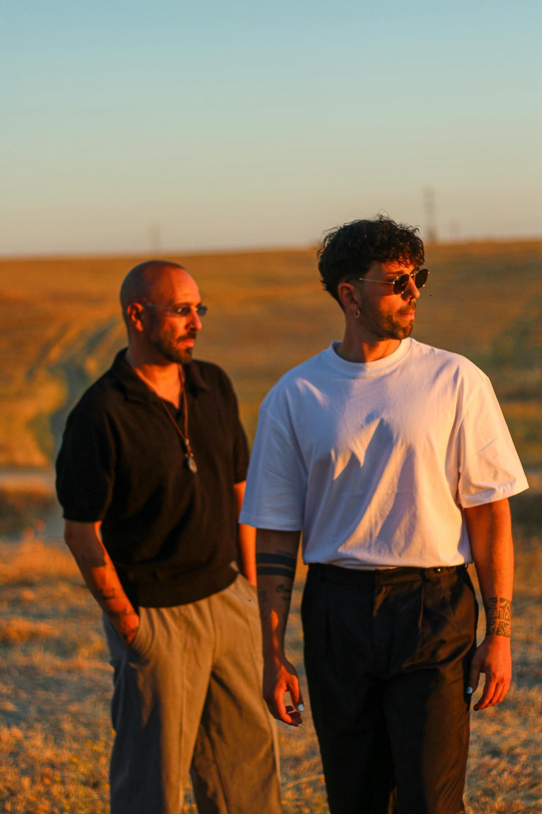
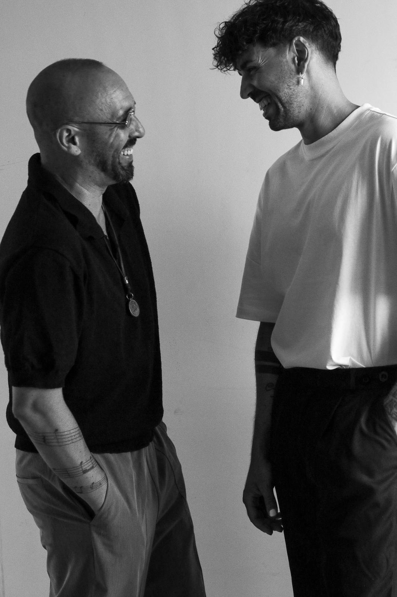
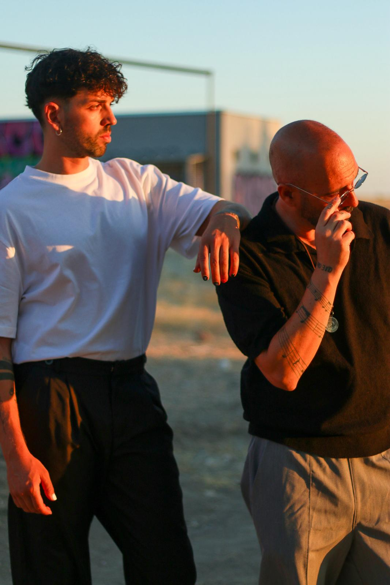

01
CEREMONIA
Cuando sobran las palabras.
La canción adecuada puede decirlo todo. Nos acercamos a ese instante con el cuidado que merece.
MÚSICA EN DIRECTO PARA BODAS
Del nudo en la garganta al “una más y nos vamos”. Somos Marcos y Sergio. Ponemos música a cada momento con cercanía, corazón y ese punto de jaleo que se recuerda.

01 / LO QUE NOS MUEVE
Hay momentos que piden bajar la voz. Otros, subir la energía hasta que nadie se quede sentado. Escuchamos cómo imagináis vuestro día y llevamos la música justo ahí.
Una ceremonia que se siente de verdad. Un cóctel donde las conversaciones acaban en estribillos. Una celebración con ganas de seguir.
02 / CADA MOMENTO TIENE SU MÚSICA
La misma boda puede tener mil emociones. Esa es precisamente la gracia.
La canción adecuada puede decirlo todo. Nos acercamos a ese instante con el cuidado que merece.
Clásicos, canciones de ahora y ese repertorio variado que invita a brindar, cantar y quedarse un rato más.
Leemos el ambiente, conectamos con vuestra gente y seguimos la energía que hace única vuestra fiesta.
¿Tenéis otro momento en mente? Contádnoslo ↗

La música se escucha.
La conexión se nota.

MARCOS + SERGIO03 / QUIÉNES SOMOS
Un encuentro casi por casualidad nos puso sobre el mismo escenario. Desde entonces, la voz de Marcos, la guitarra y voz de Sergio, y las ganas de conectar con la gente nos han llevado por celebraciones muy distintas.
Nos llamamos De Todo Un Poco porque nos gusta movernos entre estilos y emociones sin perder lo esencial: escuchar, adaptarnos y ponerle corazón a lo que hacemos.
Conocednos en vuestra boda04 / NUESTRA MANERA DE HACERLO
Nos contáis qué imagináis, qué canciones os hacen vibrar y qué momentos os importan más.
Elegimos el tono y el repertorio pensando en vuestra boda y en la gente con quien la compartís.
En el directo nos dejamos guiar por lo que pasa: emoción, complicidad y, cuando toca, fiesta.
05 / ANTES DE DECIRNOS HOLA
Para los detalles de vuestra fecha, lo mejor es hablarlo directamente.
Trabajamos en bodas y adaptamos la música a momentos con energías muy diferentes, como la ceremonia, el cóctel o una celebración más animada. Contadnos vuestro plan y os proponemos cómo encajar.
De Todo Un Poco hace honor a su nombre: un repertorio variado que va de clásicos inolvidables a canciones actuales, siempre llevado a nuestra forma de tocar y cantar.
Decidnos cuál es y en qué momento os gustaría escucharla. Hablaremos de la propuesta concreta antes de confirmarla.
Dejadnos la fecha, el lugar y una idea de lo que imagináis en el formulario de abajo. Se abrirá WhatsApp con vuestro mensaje preparado para enviárnoslo directamente.
06 / AHORA OS TOCA A VOSOTROS
No hace falta tenerlo todo cerrado. Con la fecha, el lugar y vuestra idea ya podemos empezar a hablar.